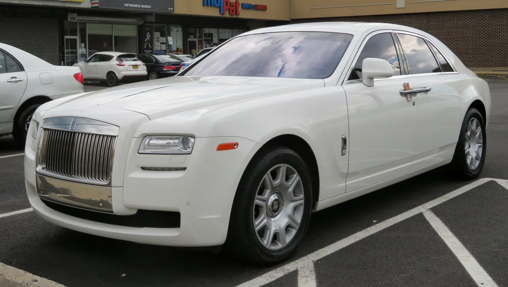
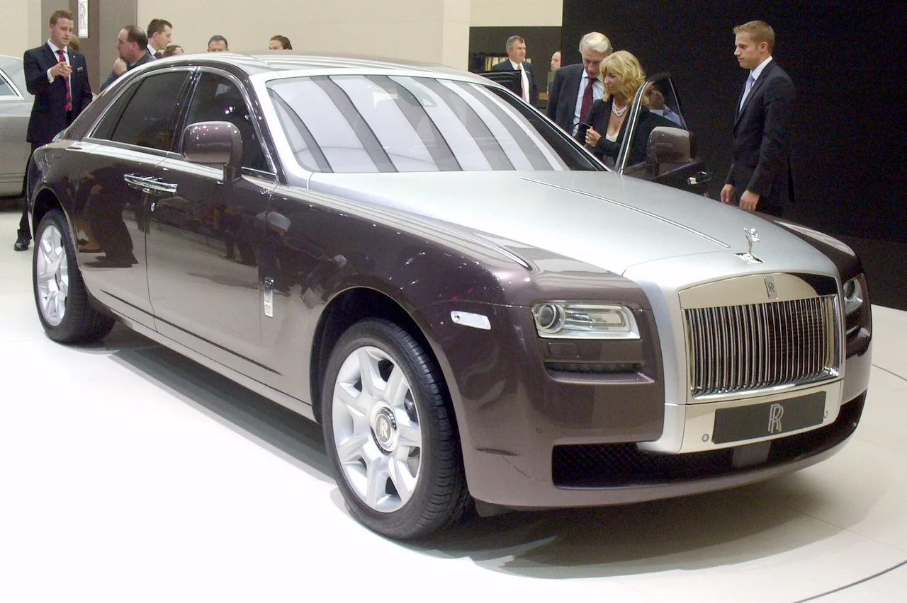

▲ 롤스로이스 고스트(1세대, 2010~2014). 저주행 개체는 중고 시세가 10만 달러 안팎까지 형성돼 있다
1세대 롤스로이스 고스트(2010~2014년식)의 중고 시세가 흥미로운 지점에 도달했습니다. 평균 가격은 7만6,046달러, 낮게는 5만4,999달러부터 높게는 8만9,950달러까지 형성돼 있습니다. 특히 2014년식 중 주행거리 2만4,955마일의 저주행 개체는 최고 10만9,895달러까지 거래된 사례도 있습니다.
1. 주행거리에 따라 5만 달러부터 11만 달러까지
고스트의 중고 시세는 주행거리에 따라 극명하게 갈립니다. 4만9,000마일을 뛴 2010년식은 경매에서 4만9,000달러에 팔렸고, 9만5,000마일의 2011년식은 5만7,000달러 수준이었습니다. 반면 저마일 매물은 8만~10만 달러대를 형성합니다. 슈퍼럭셔리 세단인 만큼 주행거리 관리가 가격에 미치는 영향이 일반 프리미엄 세단보다 훨씬 큽니다.

▲ 흰색 롤스로이스 고스트. 뉴욕 시내에서 포착된 매물로, 1세대 고스트는 저주행 여부에 따라 가격 편차가 두 배 이상 벌어진다
2. 신형 벤츠 S클래스와 만나는 가격대
2027년형 벤츠 S클래스 신차 가격은 S500 4매틱이 11만2,550달러, 상급 S580 4매틱이 13만4,600달러입니다. 고스트의 고가 매물(10만 달러 근처)이 정확히 이 S500 신차 가격대와 맞닿아 있습니다. 즉 저주행 롤스로이스 고스트 중고차를 사는 값이면, 벤츠의 최상위 세단 신차를 살 수도 있다는 뜻입니다.
| 구분 | 가격 | 비고 |
|---|---|---|
| 고스트 저마일 매물 | 8만~10만 달러대 | 2만~3만마일 수준 |
| 고스트 최고가 기록 | 10만9,895달러 | 2014년식, 2만4,955마일 |
| 벤츠 S500 4매틱(신차) | 11만2,550달러 | 2027년형 |
| 벤츠 S580 4매틱(신차) | 13만4,600달러 | 2027년형 |
| 고스트 고주행 매물 | 4만9,000~5만7,000달러 | 4만9,000~9만5,000마일 |

▲ 신형 벤츠 S클래스. S500 4매틱 신차 가격(11만2,550달러)이 저주행 롤스로이스 고스트 중고가와 겹친다
3. 왜 이런 가격 교차가 생길까
롤스로이스는 신차 가격 자체가 벤츠 S클래스보다 훨씬 높은 브랜드입니다. 하지만 슈퍼럭셔리 브랜드 특유의 급격한 초기 감가상각을 겪으면서, 3~4년만 지나도 상당한 가격 하락을 경험합니다. 반면 벤츠 S클래스는 매년 새로운 모델이 나오면서 신차 가격 자체가 꾸준히 오릅니다. 이 두 곡선이 만나는 지점이 바로 '저주행 1세대 고스트 = 신형 S클래스'라는 흥미로운 가격 등식입니다.

▲ 2009년 프랑크푸르트 모터쇼에서 공개된 1세대 고스트. 당시 신차로 화제를 모았던 이 세대가 지금은 저주행 매물 기준 신형 S클래스와 비슷한 가격에 거래된다
4. 정리 — 무엇을 선택해야 할까
같은 예산이라면 선택은 취향의 문제입니다. 신형 S클래스는 최신 기술과 보증, 낮은 유지 리스크를 제공합니다. 반면 저주행 1세대 고스트는 롤스로이스만의 존재감과 수작업 마감, 희소성을 제공합니다. 다만 고스트를 선택한다면 주행거리와 정비 이력을 꼼꼼히 따져야 합니다. 슈퍼럭셔리 브랜드답게 부품 비용과 정비 난이도가 일반 프리미엄 브랜드보다 훨씬 높기 때문에, 차량 가격만 보고 결정했다가는 이후 유지비에서 예상치 못한 부담을 만날 수 있습니다.